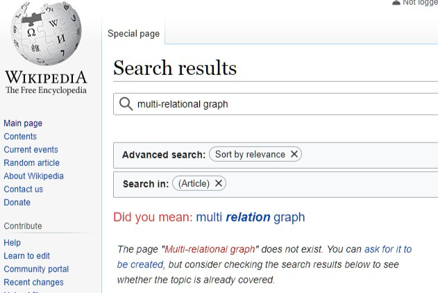

Note: OGM Forum is no longer active. This is a static snapshot as of February 2022. You can browse the site to see posts, but the functional features of the site will not work. You can search or download a zip archive of the files from the site at github/OpenGlobalMind/forum.openglobalmind.com.
I ran across a mention of “Message Passing for Hyper-Relational Knowledge Graphs” (a #GNN architecture for hyper-relational KGs like @wikidata) and wanted to capture it somewhere, so here’s a new thread.
The concept of Multi-relational graph is the missing link connecting Language-Oriented Programming, Engelbart’s Augmentation Research Tree-Meta
and my current work on MindGraph
between parse-trees and knowledge graphs
It is analogous to the link between Monad and Grammars,
but more relevant if you have an interest in Knowledge Graphs.
It does not (yet) have a wikipedia entry.
It is all about the same “Thing”, the elephant in the room I like to call “Symbolic Unity”, all mutually arising from the Metaphysics of Adjacency
This is where the requirement of notability is a hindrance to the growth of knowledge
Understandable, but all because we do not have emergent networks of personal knowledge graph that are themselves discoverable.
That’s what need building. That’s what I am working on.

As shown above, search for the term multi-relational graph on wikipedia returns no matches.
Yet you can find articles matching the term like
I am a long time researcher in this space, yet haven’t come cross it.
Google and other search engine do a great job of auto-associative recall, i.e. giving you all the documents on the web that contain the terms you search for.
“Google might be proudly saying, we are doing a lot to help people find things on the net frontier,
Who is doing the job of maybe making better maps understanding the frontier”
Organizing knowledge right at the edges of the “endless frontier” of knowledge from inception, through indwelling and growth in networks of people who care, to the point of it being notable and part of “The Common Record”. Empower People at the edges to do it for themselves, share and have conversations over their HyperMaps,of the edges, federate these conversations in emergent communities.
With the Wiki, Ward Cunningham gave us the ability to “create a new linked” page when you reach the edge of your knowledge"
What we need is for everybody to be able to do that, and at the same time have conversations with other people in an interest based emergent social network of thoughts and thinkers.


{kind=link}
{kind=link}